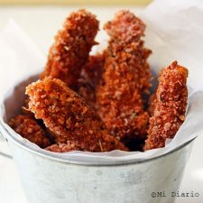

Bastones de pollo apanado
Ingredientes
- 1 pechuga de pollo sin hueso
- 1 taza de panko o pan rallado
- 1 taza de dátiles
- 1 taza de chips de chocolate
- 1 pechuga de pollo sin hueso
- 1 taza de panko o pan rallado
- 2 huevos
- 1/2 taza de harina para todo uso
- Sal y pimienta a gusto
- 1/2 cucharadita de orégano
- 1 cucharadita de paprika
- 1 taza de yogurt griego
- 1/2 taza de mostaza dijon
- 2 cucharadas de maple syrup u otro endulzante de su gusto (puede usar stevia)
Preparacion
- Una pizca de sal y pimienta
- Preparar una fuente o bandeja que pueda ir al horno, poner papel de mantequilla o protector de silicona.
- Cortar el pollo en tiras no muy delgadas ni muy gruesas.
- Colocar cada bastón de pollo en la bandeja.
- Una vez que todo el pollo está apanado, llevar al horno por 20 minutos.
- Mientras tanto preparar la salsa mezclando el yogurt, mostaza, maple syrup u otro endulzante, sazonar con un poquito de sal y pimienta.
- Disfrutar los bastones de pollo apanado untándolos en la salsa.